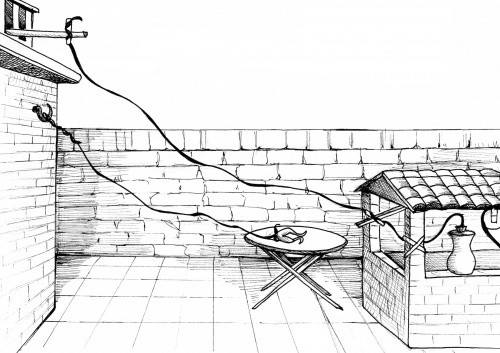

Dans le monde anglo-saxon, le culte de la productivité et de la performance individuelle se traduit par un recours de plus en plus fréquent au dopage cognitif (« cognitive enhancement »). L’ingestion de médicaments psychostimulants comme la Ritaline ou le Modafinil par des individus en bonne santé y est ainsi devenue monnaie courante.
A l’exception d’une faible proportion de médecins et étudiants en médecine, l’utilisation de ces substances reste au contraire très marginale en France, même dans le domaine thérapeutique.
Bien que cette divergence s’enracine peut-être dans une conception différente de l’esprit humain d’une culture à l’autre, le dopage cognitif pourrait prochainement entrer dans nos vies par une autre voie : la neurostimulation électrique.

D’un point de vue scientifique, l’idée n’est pas neuve :
dès l’antiquité, Scribonius Largus et Gallien discutaient de l’efficacité des chocs produits par la raie électrique dans le traitement des crises de gouttes, des maux de tête ou de l’épilepsie [PDF] ;
l’électricité animale elle-même a été découverte au XVIIIe siècle à travers les travaux de Galvani sur les cuisses de grenouille, familiers à tous les collégiens de France et de Navarre ;
à peine un siècle plus tard, les premiers électro-encéphalogrammes étaient enregistrés par Richard Caton avant d’être perfectionnés par Hans Berger, le découvreur des différentes ondes électriques produites par le cerveau
enfin, plusieurs techniques médicales de neurostimulation sont connues et appliquées depuis le milieu du XXe siècle, notamment pour le traitement des douleurs chroniques (stimulation de la moelle épinière) ou de la dépression (électrochocs ou sismothérapie).
Efficacité réelle ou mirage marketing ?
Cependant, avec la société britannique Foc.us et quelques autres, la neurostimulation vient de franchir un seuil crucial : celui de l’hôpital et, partant, celui du principe de précaution. Son appareil de « stimulation transcrânienne à courant direct » (« tDCS » en anglais) est en effet d’ores et déjà accessible au quidam moyen sur Internet.
Cette technique se distingue de la sismothérapie, par son caractère continu et surtout par une intensité de stimulation environ 50 fois plus faible. C’est d’ailleurs pour cela qu’elle est utilisée depuis environ deux décennies par les chercheurs en neurosciences cognitives : parce que leurs expériences portent principalement sur des étudiants plein d’avenir (du moins, on leur souhaite), il serait hors de question d’altérer leur fonctionnement cérébral en profondeur !
Promettant monts et merveilles à ses clients potentiels, la société Foc.us capitalise ainsi sur une importante manne d’articles académiques ayant suggéré que la stimulation cortex préfrontal permettrait :
de faciliter l’apprentissage de nouveaux exercices moteurs ou intellectuels ;
de renforcer légèrement de nombreuses « fonctions exécutives » (aptitude à accomplir plusieurs tâches à la fois, capacité de la mémoire à court terme, planification, etc.)
Si les trois points cités font en réalité l’objet d’une polémique (due à des études récentes montrant une absence d’effet, voire une dégradation des performances sur certains protocoles), ce produit suscite de nombreux débats chez les chercheurs et les cliniciens.
En effet, ces derniers sont à la fois conscients du potentiel de la stimulation transcrânienne (dont l’un des modes d’action présumés serait de faciliter la plasticité cérébrale) et de ses risques, en particulier dans le cadre d’une commercialisation à grande échelle s’appuyant sur les techniques de marketing habituelles (entendre : trompeuses, partiales et sans scrupules).
L’influente revue Neuron a d’ailleurs publié [PDF] une mise en garde explicite il y a deux ans, sans grand effet depuis :
« L’intérêt du monde académique et du grand public au sujet de la tDCS a été alimenté par de grandes déclarations en matière de thérapie et d’amélioration [cognitive]. Alors que les actions de régulation se font attendre et que certaines questions éthiques doivent être envisagées, la couverture médiatique offerte à la tDCS est en croissance continue. » (Dubljovic et al., 2014 ; ma traduction)
Une innocuité pas si bien établie
Compte tenu de l’extrême rareté des incidents graves en laboratoire (quelques crises d’épilepsie néanmoins), l’innocuité de la tDCS est constamment mise en avant par ceux qui voudraient en tirer un profit financier.
Cependant, si ce constat vaut pour des protocoles occasionnels allant de une à vingt séances par patient, nous n’avons aucune idée des conséquences physiologiques d’une utilisation répétée sur plusieurs mois ou années, hors du contexte hospitalier.
En outre, les conséquences d’une utilisation intensive de la tDCS ont été principalement évaluées sur des souris ou des rats. Or, si peu d’effets indésirables sont constatés chez ces espèces, il faut néanmoins rappeler que notre cerveau est bien plus délicat que le leur.
A titre d’exemple, la neurotoxine MPTP – qui cause la maladie de Parkinson – est déjà pathogène pour une dose de 0.001 ou 0.1mg/kg chez l’humain (DOC), tandis que des doses 10 à 100 fois supérieures peinent à reproduire les mêmes symptômes chez le rongeur.
Notre rapport aux autres
Prudence donc. Et méfiance aussi. Car s’il semble établi que la stimulation transcrânienne peut augmenter certaines capacités cognitives, il faut garder à l’esprit que ces « bénéfices » (qui pourraient au passage se révéler négligeables hors des conditions très spécifiques et contrôlées du laboratoire) s’accompagnent d’autres altérations cognitives qui ne seront pas forcément les bienvenues.
En 2013, une étude publiée dans Science a par exemple montré que la tDCS peut modifier la manière dont nous appréhendons certaines normes sociales (en l’occurrence, la tendance à donner spontanément à autrui diminue tandis que la tendance à donner pour éviter d’être puni augmente).
D’autres études parues depuis confirment que ce type de stimulation électrique peut altérer notre relation à autrui, nos décisions en matière économique, et un certain nombre d’autres mécanismes psychologiques.
Que ces modifications soient considérées comme positives et prometteuses pour la psychiatrie ou la neurologie ne doit pas faire oublier que nous parlons ici d’une modification de la pensée (voire de la personnalité) par un appareillage externe qui pourrait facilement être monté sur une paire de Google Glass…
Humanité augmentée, altérée, dénaturée ?
Chaque décennie vient avec son lot d’innovations technologiques, qui se démocratisent et s’offrent comme autant d’instruments de performance et de félicité.
En l’absence de cadre législatif contraignant, on peut donc craindre que les neurostimulateurs nous soient prochainement présentés comme les nouveaux « gadgets révolutionnaires », programmés à la manière des iPad pour faire fureur sur les marchés de Noël (et financiers).
Bernard Stiegler, sur le transhumanisme et l’amélioration cognitive
A l’instar d’autres produits high-tech qui peinent encore à trouver un marché, les mentalités anglo-saxonnes sont actuellement travaillées par les idéologues « transhumanistes » qui appellent de leurs vœux une réforme de la nature humaine par la technologie.
En guerre contre le techno-scepticisme qui accompagne la numérisation et l’automatisation intensive de nos sociétés, de nos vies, pour ne pas dire de nos pensées, leur rhétorique pourrait gagner la France plus vite qu’on ne le pense. En effet, devenu essentiel à une croissance économique pérenne du côté de la Silicon Valley, le mythe de l’homme augmenté ne manquera sans doute pas d’appuis dans les années qui viennent…
Post-scriptum
Le système tDCS n’est pas l’unique neurostimulateur dont la démocratisation pose question. Cet article aurait ainsi pu porter sur un système de stimulation transcutanée du nerf vague, présenté par la start-up Nervana au CES de Las Vegas (la grand messe high-tech où royal Macron s’est montré le mois passé). Cependant, j’ai laissé l’idée de côté car la société Nervana n’a jamais répondu à mes e-mails dans lesquels je demandais sur la base de quelles recherches reposait l’efficacité attendue de leur produit. Je n’ai trouvé aucune trace de telle recherches.
En revanche, cette technique de stimulation jusqu’alors réservée aux épileptiques ne vient pas sans effets secondaires (voix rauque, maux de tête, difficultés à déglutir) et aucune donnée ne suggère que sa synchronisation avec le rythme musical change quoi que ce soit à la chimie du cerveau ou à la perception auditive. Or, Trax a consacré ce vendredi un article-publicité à « ces écouteurs qui procurent des sensations d’extase ». Prenez donc la nouvelle avec de (très) longues pincettes.